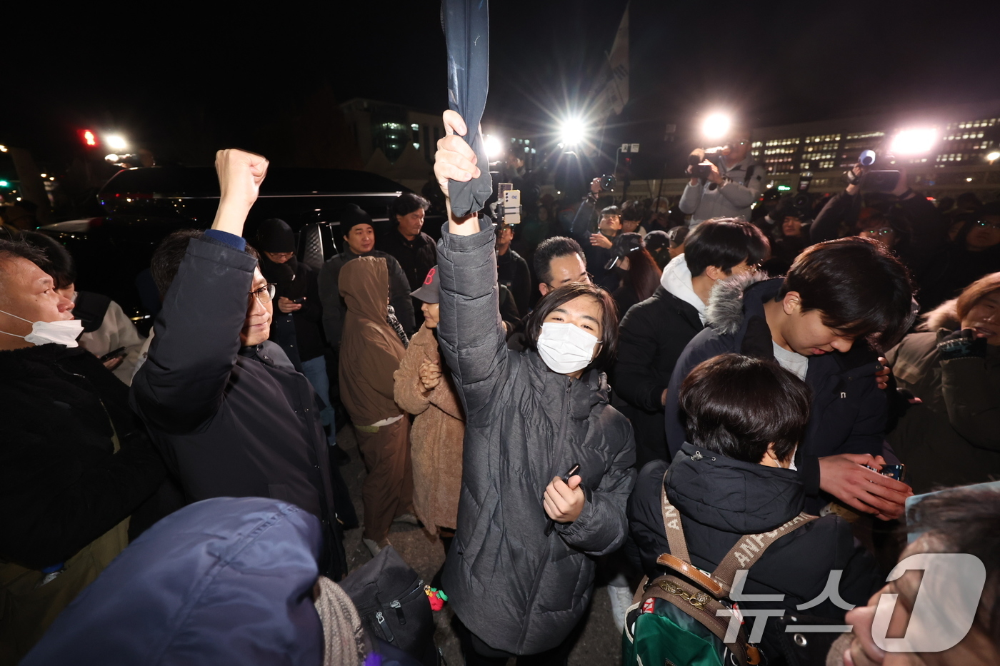

"어둠은 빛을 이길 수 없다. 거짓은 참을 이길 수 없다."
2024년 12월 4일 새벽 4시 30분, 윤석열 대통령이 국무회의를 통해 비상계엄 해제를 의결했다. 전날 밤 "효빈 2.2% 득표율은 북한의 공작"이라며 선포했던 비상계엄은 국회의 만장일치 해제 요구와 성난 민심 앞에 6시간 만에 무릎을 꿇었다.
효빈시청과 8호선 고가 역사(Sky Rail)를 점거하려던 공수부대는 시민들의 거센 저항과 국회의 해제 결의에 밀려 철수했다. 박효빈 시장을 체포하려던 시도는 무산되었으며, 시민들은 "우리가 시장을 지켰다"며 환호했다.
사라진 '내란 주동자들'... 분노한 시민들 "끝까지 쫓는다"
계엄이 해제되자마자 분위기는 반전되었다. 계엄을 부추기고 시민들을 협박했던 소위 '친윤 호소인'들과 극우 유튜버들은 자취를 감추거나 SNS 계정을 삭제하고 있다. 특히 2.2% 득표율의 당사자인 윤재훈 전 후보와 8호선 음모론을 주장했던 우신면 전 의원 등에 대한 시민들의 분노는 극에 달해 있다.
시민 단체들은 "이번 사태는 명백한 '친위 쿠데타'이자 내란"이라며 윤 대통령은 물론, 계엄을 선동한 윤재훈, 주민우 등 관련자 전원을 내란죄로 고발하겠다고 밝혔다.